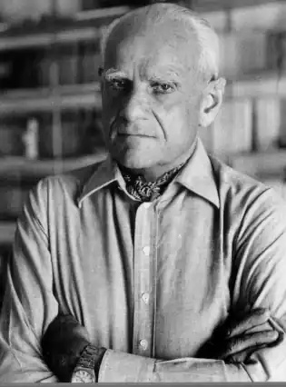
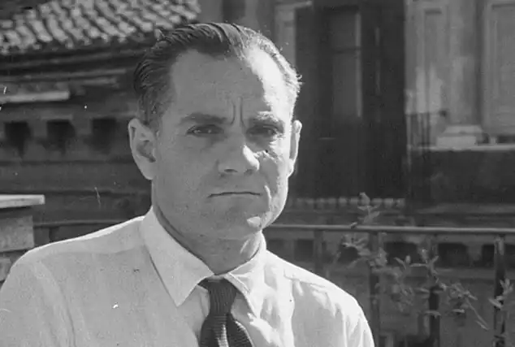

Моравіа Альберто (Moravia, Alberto, автонім: Пінкерле, Альберто — 28.11. 1907, Рим — 26.09.1990, там само) — італійський письменник. Моравіа, виходець із заможної інтелігентної родини, провів усе життя у Римі, образ "вічного міста" став одним із провідних символів усієї прози письменника. У першому романі — "Байдужі" ("GH indifferenti", 1929) події обмежені вузьким колом римської сім'ї, яка є втіленням соціальної трагедії епохи — байдужості. Комерсант Лео Мерумечі багато років був коханцем Маріяграції, багатої вдови з двома дітьми. За ці роки Лео розорив Маріяграцію, а коли вона зістарілася, звабив її дочку Карлу. Син Маріяграції, Мікеле, намагається заступитися за сестру, пригрожуючи полюбовнику матері пістолетом. Боягуз Лео погоджується одружитися з Карлою. Упродовж дії роману у стосунках персонажів змін майже не відбувається, здається, що дія зупинилася, характери статичні.
"Байдужих" критика пов'язувала з антифашистським романом, оскільки у творі Моравіа відтворив затхлу атмосферу передфашистської епохи, духовне виродження людини, її дегуманізацію як передумову фашизму. Герої роману позбавлені будь-яких почуттів, крім марнославства та грошолюбства. Саме марнославство. а не кохання змушують зістарілу Маріяграцію у всьому потурати Лео. У цьому товаристві панує брехня, ганебні вчинки видаються за високоморальні: Лео розоряє родину, кривдить дочку та матір, але поводиться як друг сім'ї, як їхній благодійник. Цікавий герой у цьому романі — Мікеле, юнак інтелігентного складу душі. Обурений навколишньою брехнею, Мікеле лише один раз висловлює протест, а потім знову байдужіє. Сам образ байдужості у цьому психологічному романі набуває значення символу широкого філософського узагальнення — байдужість, відмирання душі осмислюється як загальнолюдська трагедія XX ст., джерело всіх соціальних негараздів.
У 1947 р. письменник створив роман "Римлянка" ("La romana"), у 1953 p. — "Римські оповідання" ("Raccont romani"), які згодом доповнювалися новими збірками, так що поняття "римські оповідання" стало претендувати на статус літературного терміна. Образ Рима у цих творах набуває широкого узагальнення, і водночас роман і оповідання вирізняються природною конкретністю, локальністю. Дійові особи роману і оповідань — звичайні мешканці Рима, котрі вимушені шукати шляхи до виживання за будь-яку ціну і найчастіше цією ціною стає відмова від моралі. У "Римлянці" головна героїня Адріана — жінка з обличчям мадонни і духовним цинізмом блудниці. Вона стає "доступною" без особливих докорів сумління, хоча в душі плекає мрію про кохання. Троє чоловіків у житті Адріани, й у кожного з них частинка її душі. Перший із них шеф фашистської поліції Астуріта, одержимо закоханий у Адріану, другий — бандюга-здоровань Сонцоньо, до котрого героїня відчуває незрозумілий і некерований фізичний потяг, а третій — студент із шляхетної родини Джакомо Діодаті, учасник антифашистського Опору, котрого Адріана любить душею. Події стягуються у вузол у кінці роману: Джакомо потрапляє у в'язницю, в запалі дивної апатії (знову мотив фатальної байдужості!) називає імена своїх товаришів з Опору. Адріана вимагає, щоб Астуріта негайно звільнив Джакомо, закоханий поліцейський виконує її прохання беззаперечно. Зрада Джакомо не має наслідків, але юнак не може пробачити собі ганебний вчинок і накладає на себе руки. Адріана гірко оплакує Джакомо, майже не помічаючи загибелі Астуріти та Сонцоньо. Свою майбутню дитину, батьком котрої вона вважає бандита Сонцоньо, Адріана хоче довірити родині коханого Джакомо. З цією ненародженою істотою пов'язана в романі тема майбутнього Італії, і сам образ блудниці Адріани немовби очищується, у ньому проступають риси мадонни, людської матері. Роман Моравіа вирізняється звичаєописовістю, побутовими деталями, та найбільше — психологічністю. Крім цього у ньому помітний політичний підтекст, засудження фашизму як дегуманізації, морального зубожіння. У "Римських оповіданнях" — повоєнна Італія. Розповідь йде від першої особи, зазвичай, це простий хлопець із тих, хто водить таксі, стоїть за прилавком, миє посуд у ресторані, вештається у пошуках роботи, може з відчаю стати злодюжкою, а якщо пощастить, влаштується у кіно на роль гангстера. Життєва достовірність і ліризм "Римських оповідань" наближає їх до неореалізму, однак, на відміну від неореалістів, Моравіа ніколи не розвиває теми солідарності простих людей, вони в нього роз'єднані, самотні. Майже трагічно звучить цей мотив роз'єднаності в оповіданні "Ромул і Рем": двоє колишніх друзів із Опору після війни стають майже жебраками, і один із них, усвідомлюючи свій ганебний вчинок, грабує іншого. Немовби нічого не змінилося з того часу, коли Ромул убив свого брата Рема, а пізніше заснував місто Рим. Трагічне в оповіданнях Моравіа сусідить із комічним. Із темою фашизму, війни, Опору пов'язаний і роман "Чочара" (1957), який був повністю закінчений і опублікований лише в 1957 р. Головна героїня роману — Чезіра походить із гірської Чочарії, що відома дикунством своїх мешканців. Чезіра — натура енергійна, у Римі вона швидко нажила статків торгівлею, а під час війни ще й спекуляцією, але війна вибила Чезіру із звичного середовища: вона разом із дочкою Розеттою стає біженкою, втрачає все нажите майно. У романі перед читачем постає тил із його розрухою, нестатками, голодом, свавіллям іноземних солдат. У цьому романі попередні образи письменника змальовані в іншому ракурсі: збезчещена Розетта спокійно і ледь не з власної охоти стає блудницею, проте Чезіра надіється повернути дочці втрачену віру у життя та добро. З'являється у "Чочарі" й інтелігент, антифашист Мікеле Феста, котрий не є учасником Опору, але близький йому за духом. Цей новий Мікеле вже не схожий на героя "Байдужих", він активний у своїй гуманності; не герой-борець, а швидше мученик Опору, котрий гине від фашистської кулі, заступившись за мешканців чужого йому села. Загибель Мікеле відлунює болем у серці Чезіри, очищуючи її душу. У романі "Чочара" є ознаки, що зближують його з антифашистською літературою. Соціально-психологічний роман "Зневага" ("II disprezzo", 1954) присвячений долі італійської інтелігенції у повоєнний час. Молодий письменник Ріккардо Мольтені шукає "правильний шлях" у мистецтві та житті. Задля заробітку він іде працювати в кіно, пише сценарії для Баттісти, процвітаючого продюсера касових фільмів. Баттіста забирає його дружину красуню Емілію і змушує письменника переробляти на розважальний лад сюжет давньогрецької "Одіссеї". Письменник Ріккардо Мольтені не зразу розуміє, що він, по суті, благословляє залицяння Баттісти до Емілії і сприяє спотворенню класичної стародавньої поеми на догод;. прибутковому кіно. Цю подвійну зраду Ріккардо усвідомлює занадто пізно: Емілія покинула його, а згодом загинула в аварії, "зламалася", вдарившись у автомобілі й ушкодивши хребет Ріккардо зневажає і себе, й інших. Врешті-решт, він відмовляється від служби у Баттісти; тепер у нього немає роботи, немає дружини, немає перспективи. Роман "Зневага" написаний з добрим почуттям до інтелігента, котрий не хоче служити масовій культурі. У романі піднімаються проблеми сім'ї, культури, які тісно пов'язані з лиховісною темою "виживання" людини в суспільстві, де панує культ грошей. У 50-х роках Моравіа написав декілька драм, пов'язаних із темою дегуманізації особистості "Беатріче Ченчі" (1955), "Не вияснюй" (1957). Згодом він створив досить "жорстокі" драмі: "Світ такий, яким він є" (1966), "Бог Курт (1967), "Життя-гра"(1969). У центрі драми "Беатріче Ченчі" ("Beatrice Cenci") — історія батьковбивства — історичний сюжет, вперше привнесений у літературу англійським поетом П.Б. Шеллі. У драмі Моравіа Беатріче позбавлена героїчного ореолу. На початку приголомшена розпусними залицяннями рідного батька, в кінц: драми вона стає коханкою чоловіка, котрий згодився вбити старого графа Ченчі. Із жертви Беатріче перетворюється у вбивцю батька, втрачаючи при цьому моральні орієнтири, честь і гідність. У п'єсі "Світ такий, яким він є" професор Мілоне висуває концепцію, яку називає "терапією мови": із лексики будуть вилучені "застарілі" слова: "любов", "істина", "розум", а залишаться лише технічні терміни, спортивні і побутові означення. "Бог Курт" — філософсько-політична драма, події якої відбуваються у концтаборі. Комендант табору Курт проводить "культурний експеримент": змушує єврея Саула грати роль Едіпа в трагедії Софокла, режисерська інтерпретація Курта вимагає, щоб за ходом вистави Саул убив свого батька і зґвалтував матір. Ця антифашистська драма Моравіа є також виступом проти сучасної інтелектуальної режисури, з її жорстокими експериментами; зловісного трактування набуває думка про стирання меж між театром і життям. Моравіа торкається теми відчуження людини від реальності. У пізніх "римських оповіданнях" (зб. "Автомат" — "L'automa", 1963) і в романі "Нудьга"("La noia", 1960). Моравіа порушує тему відчуження людини.Головний герой роману "Нудьга" — художник Діно, котрий відчуває настільки гостру нудьгу. що вона завдає йому страждань, і руйнує його творчу активність. Стражданням Діно протиставлені впевненість і врівноваженість його матері, для котрої нудьга — звичний стан: зміст u життя полягає у світських успіхах і матеріальних здобутках, хоча гострої потреби в цьому немає, оскільки вона й без того заможна. Для неї важливий самий процес збагачення. Діно не притаманне користолюбство, він знаходить інший порятунок від нудьги — еротику. Роман Моравіа, який і раніше не був далекий від натуралістичності, на цей раз досягає ознак, характерних для еротичного роману XX ст. Роман "Нудьга" завершується самогубством Діно — єдиний вихід, який знайшов герой. Діно — останній із молодих героїв Моравіа, котрі представляють нове покоління італійської інтелігенції, — це не трудівники, а споживачі з невгамовним потягом до насолоди. Задоволення цих потягів спустошує. У романі помітна критика сучасної цивілізації, що не здатна втамувати духовні потреби розумово розвиненої людини. Реалізм Моравіа поєднує витонченість психологічного аналізу і сатиричний гротеск, у його романах наявні численні літературні ремінісценції, художні символи широкого узагальнення. Пізні твори письменника — збірка оповідань "Рай" (1970), роман "Я і він" ("Іо є lui", 1971), "Внутрішнє життя" ("La vita interiore", 1978), "Тисяча дев'ятсот тридцять четвертий рік" (1983), "Спостерігач" ("L'uomo che quarda", 1985).